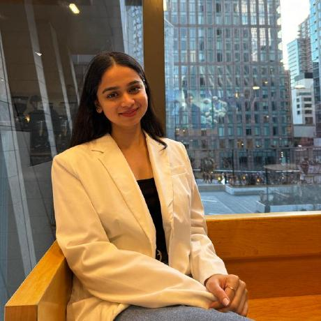

Hello, I'm
Nishi Sheth
Healthcare Data Analyst


Hello, I'm
Healthcare Data Analyst
Get To Know More

1 year experience as
Data Analyst

Doctor of Pharmacy
Master of Science in Health Informatics
As a dedicated Healthcare Informaticist and Pharmacist based in Boston, MA, I am committed to merging clinical expertise with data-driven healthcare innovations. My academic journey, including a Doctor of Pharmacy and an ongoing Master of Science in Health Informatics at Northeastern University, equips me with a unique blend of healthcare knowledge and technical acumen. Through hands-on experience as a Data Scientist at Quantum Pulse Consulting and as a Data Analyst at Dartmouth Medical Center, I have honed my skills in AWS, React, R, and SQL to drive healthcare solutions. My projects—ranging from tumor classification accuracy improvements to predictive models for heart disease—reflect my passion for leveraging technology to improve patient outcomes. Eager to make a meaningful impact, I am actively seeking opportunities to collaborate as a Healthcare Data Analyst where my blend of analytical skills and healthcare experience can contribute to transformative advancements in the field.
Explore My
As a Data Scientist at Quantum Pulse Consulting, I led the migration of AWS infrastructure, utilizing services such as EC2, S3, and RDS to enhance system availability and disaster recovery. This initiative resulted in improved performance for over 100 users. I also contributed to building a responsive front-end with React, which improved user interaction and increased operational efficiency by 27% for a high-demand client. My role involved managing full-stack integration between React, Django APIs, and PostgreSQL, which improved system reliability and boosted customer satisfaction by 15%. I optimized PostgreSQL databases, reducing data retrieval times by 17%, and designed and implemented secure APIs with Django, leading to a 23% improvement in system resilience for a major client.
At Dartmouth Medical Center, I worked as a Data Analyst, focusing on cancer research. I implemented machine learning models such as KNN and SVM using R, which increased tumor classification accuracy by 15%, aiding in cancer diagnosis. I managed and optimized large datasets using SQL from the TCGA and TCIA databases, reducing query execution times by 25%, thus speeding up the analysis process. I also integrated and standardized data sources using AWS Glue and Lambda, streamlining data workflows and reducing manual handling by 40%. My work included leveraging AWS EC2 and S3 for handling over 50 terabytes of imaging data, significantly boosting research efficiency. Through exploratory data analysis (EDA) in R, using ggplot2 and dplyr, I identified key patterns and anomalies to improve data cleaning and feature selection for better model outcomes.
During my time as a Clinical Trial Assistant at Clinfotics LLP, I analyzed clinical trial data using R, generating insights to evaluate treatment efficacy and ensuring accurate reporting of trial results. My responsibilities included conducting data validation and quality checks to guarantee the accuracy, consistency, and regulatory compliance of clinical trial datasets. I collaborated with clinical research teams to ensure the proper handling and storage of trial data and biological samples in accordance with ethical and regulatory guidelines. Additionally, I monitored and tracked trial progress using clinical trial management systems (CTMS), ensuring timely data entry, thorough documentation, and adherence to project timelines.
Browse My Recent
Get in Touch